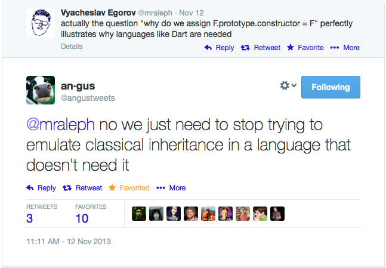

Modular Architectures in JS
JS (programming in general) has a fanaticism problem.
"When you have a hammer..."
Fanaticism prevents us from building the best software by artifically limiting our available solutions.
Modular Architecture
Stop only asking "How is [X] like [my favorite]."
Start asking "How will [X] make my code/process/life better?"
Be passionate, but not fanatic, about the tools you use.
Avoid 'Developer Truisms'

I'm not saying don't use a framework, ever.
Proof of Concepts
Building a POC allows you to relatively quickly determine the cost-to-benefit ratio of a particular tool.
- Write more than 'Hello World'
- Consider the tasks you need the tool to accomplish
- Keep your team's eccentricities in mind / don't build in a vacuum.
Consider the following:
- Is it bringing in functionality I don't need?
- Can I bring in outside code easily?
- What's the investment-to-reward ratio?

This is usually where I'm barraged with arguments
Modular systems cause spaghetti code!
- Tying together all the modules becomes an unmantainable mess.
- My favorite framework solves this by including everything OR having a plugin system
separate module choices from your code
- Abstraction Layers
- Functional Mixins
- Architecture Assistance
Abstraction Layers
Abstraction layers mean you can swap out modules without editing every reference to that module
They also mean you can create a consistent style and language for your code
Example: Primus
Functional Mixins
Augment your code without creating a direct dependency

"Architecture Assistance"
Definition of 'Framework':
"the basic structure of something : a set of ideas or facts that provide support for something" - http://www.merriam-webster.com/
Good Examples:
What you get
- Swap out modules with minimal work
- Modify abstraction layer, run the tests on your code, done.
My Framework has everything my team needs.
- Why would I spend tons of time picking each and every module?
- Everything moves much quicker when I use a framework
- My team all speaks the same language this way
This is one argument where fanticism really shows.
I see it often, myself.
- All-in-one Frameworks tend to have a steep learning curve
- This can mean long ramp-ups to productivity
Don't hold your application hostage
- Pick the right tool for each task
- Don't settle for one huge library that does some things you need well at the expense of other tasks.
Third-Party module management is a nightmare.
We have the technology...
Package Management


(Client-side) Module Loading


(Also, ES6 is coming!)
Package management + module loading + CI
=
significant reduction in nightmares
To re-iterate
- Be passionate, not fanatic
- Be skeptical of large buy-in
- Pick the right tool for each task
- If you use a framework, be judicious
Why bother?
- Abstractions create a common language/way of doing things
- Everything you need, nothing you don't
- Self-contained modules === easier, less brittle testing.

Because developer hapiness is contagious
a brief word of thanks
Questions? Comments?
@kassandra_perch
kassandra@kassandraperch.com
Engineering Evangelist, RetailMeNot